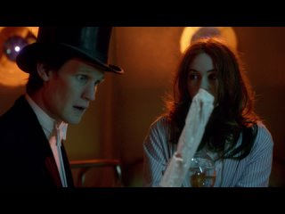
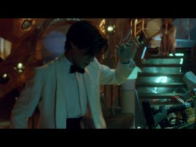
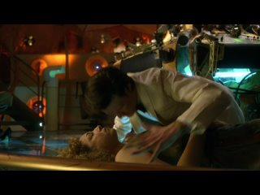

 | Эми просыпается, чтобы ответить на телефон ТАРДИС, и замечает Доктора, который занят своими делами, пока они с Рори спят. Она выясняет, куда именно Доктор направлялся ночью. | |
|---|---|---|
 | Эми, наконец, удаётся задать Доктору вопрос, давно преследовавший её - как она помнит две различные версии своей жизни? Первая, в которой она жила с тётей и не имела родителей, и вторая, созданная после перезагрузки вселенной, где она счастлива с родителями. Доктор отвечает на её вопрос, предлагая ей исправить самое грустное событие, которое с ней произошло в жизни. | |
| Доктор отправляется в Стормкейдж, чтобы забрать Ривер Сонг на первое свидание. Его планы осложняются, когда в ТАРДИС врывается будущая версия Ривер. | ||
 | Доктор должен справиться тремя версиями Ривер Сонг в ТАРДИС, чтобы избежать большой катастрофы. По пути он сталкивается с будущим собой и ещё одной Ривер. Одну из Ривер он отправляет назад при помощи манипулятора временной воронки, а последняя версия отправляется назад к своему Доктору. Из комнат ТАРДИС выходит первая Ривер, не подозревающая о том, что только что произошло. | |
| Крейг Оуэнс должен остаться один на один со своим ребёнком как раз в то время, когда в Лондоне начинают происходить странные вещи. |
Night and the Doctor
5 мини-эпизодов
22 ноября 2011
Формат: 4, 5, 3, 4 и 2 минутные эпизоды
| Варианты озвучек: | * MVO BaibaKo |
|---|---|
| Скачивание и просмотр: |
Ночь и Доктор - объединённое название для серии из 5 мини-эпизодов, которые вышли в качестве дополнения к DVD-релизу 6 сезона «Доктора Кто». Первые четыре мини-эпизода были связаны одной сюжетной аркой - что Доктор делает ночью? - «Плохая ночь», «Хорошая ночь», «Первая ночь» и «Последняя ночь» и были написаны Стивеном Моффатом и сняты Ричардом Сеньором.Последний мини-эпизод, «Бессонная ночь», являлся своеобразным приквелом к серии «Время на исходе» и был написан Томом МакРеем. В титрах ошибочно указано, что эпизод написал Стивен Моффат, однако буклет, сопровождающий DVD к 6 сезону, поправляет ошибку.